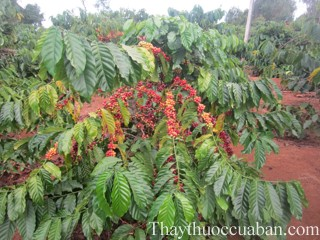

Tên khác
Tên thường gọi: Cà phê, Cà phê chè, hay Cà phê Arabica
Tên tiếng Trung: 咖啡
Tên khoa học: Coffea arabica L.
Họ khoa học: thuộc họ Cà phê - Rubiaceae.
Cây cà phê
(Mô tả, hình ảnh cây cà phê, phân bố, thu hái, chế biến, thành phần hóa học, tác dụng dược lý)
Mô tả:

Bộ phận dùng:
Hạt - Semen Coffeae.
Nơi sống và thu hái:
Loài cây của Abyssini (Bắc Phi), Tây Nam Ethiôpi và Bắc Xu Đăng, được thuần hoá ở các xứ Ả rập, nhiệt đới Phi Châu, Brazin. Ở nước ta có trồng, kể cả Cà phê Mokka – var. Mokka Cram, có quả nhỏ hơn. Ở nước ta cũng trồng khá nhiều cây Cà phê vối hay Cà phê Robusta - Coffea carephora Pierre ex Froehner var. robusta (Lind. ex Willd.) Chev., gốc ở Tây Phi, có kích thước lớn hơn, cao đến 8-12m, lá có phiến dài 10-13cm, có nhiều hoa hơn, hạt cỡ trung bình. Loài Cà phê mít hay Cà phê excelsa - Coffea dewevrei Willd. et Dur var. excelsa Chev. có kích thước lớn hơn, cao tới 15-20m, lá cũng dài hơn, tới 40cm.
Có thể thu hái hạt Cà phê quanh năm, đem chà vỏ và lấy hạt đem phơi khô.
Thành phần hóa học:
Hạt cà phê xanh giàu glucid (hơn 50%, phần lớn là các polysaccharid) và lipid (10 đến 15%) cả protein (10 đến 15%) và acid hữu cơ (đặc biệt là các acid cafeylquinic hay acid chlorogenic. Hàm lượng về cafein thay đổi, từ 0,5 đến 1,8% ở Cà phê arabica (trung bình là 1-1,3%) và từ 1,3 đến 5,2% ở Cà phê vối (trung bình 2-3%), một phần của cafein thường kết hợp với acid chlorogenic. Cà phê rang lên có những chất thơm, gọi chung là cafeol (acid cafeic, oleic, linoleic, palmitic) khoảng 0,05%, nhưng đồng thời lại tạo ra một yếu tố phức hợp độc là cafeotoxin (0,07%).
Từ tháng 5 năm 1975, người ta đã biết được 468 chất của cà phê, ngày nay đã biết hơn 600 chất.
Tác dụng dược lý
Cà phê có thể làm người ta thấy hưng phấn là do chứa các hợp chất mà thành phần cơ bản là cafein, với hàm lượng 0,7- 2%, ít hơn so với trà (chè) ở mức 2-3%. Tuy nhiên, một ly cà phê có tác dụng kích thích mạnh hơn trà vì sử dụng đến 10-15g bột cà phê chứa khoảng 100mg cafein, còn một ấm trà có ít cafein hơn. Cafein có tác dụng kích thích hệ thần kinh trung ương, làm cho tỉnh táo, kích thích khả năng làm việc, nhất là làm việc bằng trí óc, tăng cường hoạt động cơ và sự phối hợp hoạt động. Cho nên chúng ta thích uống cafe trong những lúc buồn ngủ hay vào mỗi buổi sáng là như vậy.
Cafe còn được sử dụng là thành phần trong các loại thuốc giảm đau, kích thích…thuốc trị cảm, đau nhức, giúp tăng cường tác dụng giảm đau của paracetamol, aspirin hoặc làm giảm tác dụng gây buồn ngủ của thuốc kháng histamine trị dị ứng. Không những thế một số hợp chất tìm thấy trong cafe có tác dụng làm giảm các tác hại do bệnh béo phì gây ra.
Cafe còn là thứ đồ uống đem lại giá trị dinh dưỡng cao nhiều nhất là hợp chất kali và magie còn lại là 12% lipit (chất béo), 12% protit (chất đạm), 4% chất khoáng. Uống cafe vào mỗi buổi sáng cũng đem lại cho bạn nhiều năng lượng cho một ngày mới, đặc biệt khi bạn uống cafe với sữa thì sẽ tốt hơn và nhiều chất dinh dưỡng hơn.
Cà phê có chứa cafein tác động lên hệ thần kinh và tim mạch nên người bị bệnh tim mạch không nên sử dụng cà phê. Cafein có tác dụng lợi tiểu, nếu uống ban đêm thì ngoài khó ngủ do bị kích thích lại phải thức giấc đi tiểu đêm. Cafein có tác dụng kích thích làm tăng tiết axit dịch vị. Vì vậy tránh uống cà phê vào lúc bụng trống để bảo vệ niêm mạc dạ dày, nhất là những người đã sẵn yếu dạ dày. Ngoài ra cafein còn có tác dụng gây nghiện thuộc loại nhẹ và chỉ gây tác dụng tâm lý, nghiện cà phê tới cữ mà không có cà phê uống sẽ cảm thấy khó chịu, uể oải, bần thần, thậm chí mệt mỏi… tuy nhiên không gây hại.
Vị thuốc cà phê
(Công dụng, liều dùng, tính vị, quy kinh...)
Tính vị, tác dụng:
Cà phê có vị đắng, có tác dụng kích thích thần kinh và tâm thần, làm tăng hoạt động của tim, co mạch trung ương, co mạch ngoại vi (mạch phổi, mũi, vành, thận), lợi tiểu, làm khoan khoái, kích thích tiêu hoá.
Cây có độc nhưng chỉ với liều cao và kéo dài, gây bồn chồn, Mất ngủ, đau dây thần kinh, trầm cảm, nhưng nếu uống cà phê đun sôi thì cafeotoxin sẽ bị tiêu huỷ.
Công dụng, chỉ định và phối hợp:
Thường dùng trị suy nhược, mất sức do bệnh nhiễm trùng, mất trương lực dạ dày.
Liều dùng
Người ta dùng bột cà phê hãm uống hay dùng cafein dạng viên (0,20-1g mỗi ngày) hoặc dạng thuốc tiêm dưới da.
Tham khảo
Kiêng kỵ
Loạn thần kinh, viêm cơ tim tiến triển không nên uống cà phê
Sử dụng cà phê trị nám da
Một số nghiên cứu cho thấy: cà phê có tác dụng trong việc phòng ngừa và trị nám da. Theo nghiên cứu, mỗi ngày uống từ 1 đến 2 tách cà phê, sẽ giúp làm giảm nguy cơ bị các vết nám trên da do tiếp xúc trực tiếp và lâu ngày với ánh nắng Mặt Trời của tới 5%. Chống lão hóa lại còn giúp trị nám. Ngoài việc uống có thể trị nám thì đắp mặt nạ cà phê trị nám cũng là một phương pháp khá hiệu quả giúp bạn trị nám da từ cả bên trong lẫn bên ngoài nữa nhé.
Cách dùng: Bạn có thể dùng bột cà phê pha với 3 thìa nước cốt chanh thành hỗn hợp sệt sêt sau đó đắp lên mặt. Chờ khoảng 20 phút rồi rửa mặt lại với nước. Phương pháp này bạn có thể làm 3lần/ tuần. Ngoài ra khi sử dụng loại mặt nạ này thì bạn không nên đi ra ngoài nắng có thể làm da bắt nắng và làm tình trạng nám da trở nên nghiêm trong hơn.
Một số lưu ý khi dùng cà phê trị nám
– Tuy nhiên, nếu lượng cafein đưa vào cơ thể mỗi ngày vượt quá 300mg thì sẽ không tốt cho sức khỏe của bạn
– Mỗi tách cà phê bình thường sẽ có khoảng 100mg cafein, vậy nên mỗi ngày bạn chỉ nên uống từ 1 đến 2 tách cà phê là đủ.
– Bạn cũng không nên uống cà phê lúc đói bụng để khỏi ảnh hưởng đến dạ dày.
– Trẻ em hay bị dị ứng và phụ nữ đang nuôi con cũng cần hạn chế sử dụng sử dụng cà phê.
Cần làm kiên trì mới đem lại hiệu quả tốt.
Các cách pha cà phê ngon phổ biến trên thế giới
Cách thưởng thức cà phê thay đổi tuỳ theo từng nền văn hoá, tập quán dân tộc hay khẩu vị từng cá nhân. Về cơ bản người ta phân biệt 5 hình thức khác nhau:
Ở các nước Đức, Thụy Sĩ và Mỹ người ta pha cà phê bằng cách cho nước sôi chảy qua một cái túi lọc chứa bột cà phê. Cách thức này được Melitta Bentz phát minh ra vào năm 1908.
Phổ biến nhất ở Ý là cà phê espresso. Loại cà phê này được pha bằng cách cho nước bị ép dưới áp suất cao chảy qua cà phê xay cực mịn. Cách pha này sẽ tạo ra một lớp kem từ dầu cà phê.
Thổ Nhĩ Kỳ và các nước vùng Balkan pha cà phê theo "kiểu Thổ Nhĩ Kỳ". Theo cách này cà phê xay mịn, đường và nước được cho vào một loại ấm mỏng hình chóp rồi đun lên. (xem thêm Mokka)
Pha kiểu Pháp: kiểu pha này khá nổi tiếng và cũng rất gần gũi với nhiều người. Họ dùng một loại bình gọi là French press có cấu tạo tương tự như phin cà phê của Việt Nam. Bột cà phê được cho vào trong bình rồi dùng một miếng lọc bằng kim loại ép lên trên (press), sau đó rót nước sôi vào và đậy nắp lại. Nước sôi sẽ qua miếng lọc rồi thấm dần vào bột cà phê. Do tốc độ chảy của nước khi qua miếng lọc rất chậm nên cà phê sẽ rất đặc.
Cà phê hòa tan: loại cà phê chỉ cần đổ nước nóng vào, khuấy lên là có thể uống ngay.
Trên cơ sở năm cách pha chế trên mà ngày nay người ta phát minh ra hàng trăm công thức pha cà phê cũng như hàng ngàn món đồ uống có chứa cà phê. Nhiều cách thức đòi hỏi phải có máy pha cà phê chuyên dụng.
Nơi mua bán cà phê
Trên thị trường Việt Nam, có xuất hiện cách chế biến cà phê bằng đậu nành, bắp rang cháy pha trộn cùng với hàng chục loại phụ gia, hương liệu hóa học để thành các loại bột cà phê. các chất độn cà phê như bắp rang, đậu nành bị rang cháy đen sẽ rất có hại cho sức khỏe người tiêu dùng. Cụ thể, nếu bắp, đậu nành khi bị rang cháy đen, có mùi khét thì hoàn toàn không còn giá trị dinh dưỡng. Khi đậu được rang với nhiệt độ cao hoặc bắp cháy sẽ sinh ra nhiều loại chất độc hại. Trong đó, các chất như acrylamide, heterocyclic amines, HCAs... là những chất có khả năng gây ung thư cho người sử dụng. Việc các cơ sở sản xuất lạm dụng nhiều chất phụ gia hóa chất với liều lượng quá nhiều sẽ gây nguy hại cho sức khỏe người dùng. Nếu cho quá nhiều đường hóa học sẽ dẫn tới triệu chứng tiêu chảy. Các chất phụ gia khác cho vượt mức nhiều lần sẽ gây tồn dư các kim loại nặng, các kim loại này sẽ lắng lại ở gan, ruột, thận và dẫn tới các bệnh lý ở các cơ quan này.
Chính vì thế người dùng nên lựa chọn mua cà phê tại những địa chỉ uy tín có nguồn gốc rõ ràng.
Tag: hinh anh cay ca phe, cong dung cua ca phe, tac dung cua ca phe, vi thuoc ca phe, thuoc nam
Tag: cay ca phe, vi thuoc ca phe, cong dung ca phe, Hinh anh cay ca phe, Tac dung ca phe, Thuoc nam
Thaythuoccuaban.com Tổng hợp
*************************